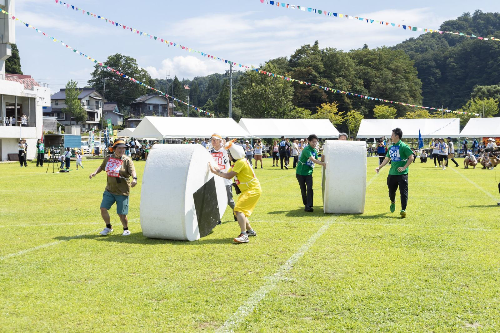

Festivals · Arts
Echigo-Tsumari Art Triennale 2027
- Dates
- –
- Venue
- Echigo-Tsumari region (Tokamachi City and Tsunan Town)
- Location
- Tokamachi, Japan
- Format
- In-person
- Category
- Arts
- Industry
- Contemporary art / land art
- Organiser
- Echigo-Tsumari Art Field Executive Committee
- Official website
- https://www.echigo-tsumari.jp/news/20260725/
About
Closed on Tuesdays and Wednesdays except 10-11 August and 3 November (85 opening days). 10th edition. Dates are local to the host city (Japan Standard Time, UTC+9).
Topics: contemporary art, rural art, triennale.
No organiser attendance figure found on the official pages fetched 24 Nov 2026. Ranked by our estimated size tier 'very large' (100,000+ attendees/visits), a judgement from format, venue and scale, not an official number.